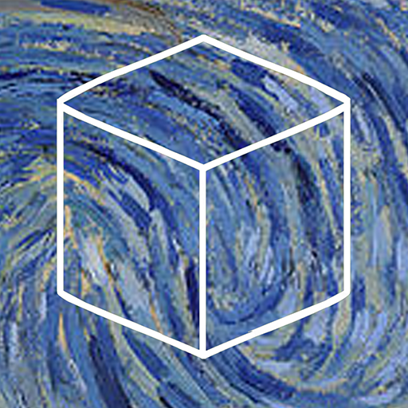

“It feels like you're surrounded by art.”
Cube Escape: Arles é o terceiro episódio da série Cube Escape e uma das primeiras experiências da Rusty Lake dentro de seu universo misterioso. Lançado em 5 de junho de 2015, o jogo coloca o jogador dentro de um quarto em Arles, na França. Preso no ambiente, é necessário explorar cada canto, encontrar objetos, resolver enigmas e descobrir como escapar. Diferente dos episódios que desenvolvem diretamente a história principal de Rusty Lake, Arles funciona como uma espécie de desvio da narrativa de Seasons e The Lake. Mesmo assim, mantém a atmosfera estranha, surreal e cheia de mistérios característica da série. O jogo também se destaca por sua forte relação com a arte e, principalmente, com Vincent van Gogh.
O jogador assume o papel de um pintor que está preso dentro de seu quarto em Arles. A identidade do personagem não é apresentada diretamente pelo jogo, mas sua aparência, seu ambiente e suas pinturas deixam clara a referência a Vincent van Gogh. Enquanto explora o quarto, o jogador encontra diferentes objetos e pinturas que precisam ser utilizados para solucionar os enigmas. O objetivo principal é encontrar uma maneira de escapar do quarto. A história de Arles é considerada uma espécie de história paralela dentro do universo de Rusty Lake. O próprio estúdio descreveu o jogo como um desvio da história apresentada em Cube Escape: Seasons e Cube Escape: The Lake.
A principal inspiração de Cube Escape: Arles é o pintor holandês Vincent van Gogh. Van Gogh viveu durante um período em Arles, no sul da França, onde produziu diversas obras importantes. Entre elas está "Quarto em Arles", pintura que retrata seu próprio quarto e que serviu como uma das principais referências visuais para o cenário do jogo. A Rusty Lake utilizou essa obra como base para criar o ambiente de Arles, adicionando objetos, enigmas e elementos sobrenaturais ao cenário.